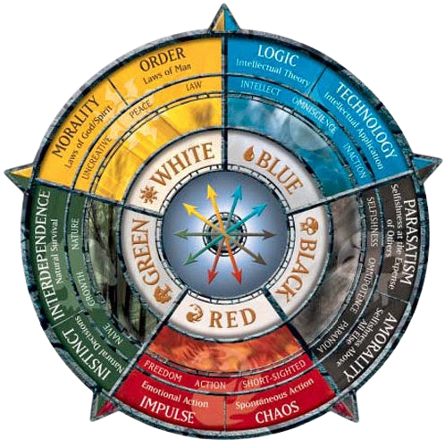

Olá! meu nome é rafael Scheneider Ranaudo e sou um jogador de magic comum amante de um formato chamado Commander!
Quer saber mais sobre mim?
Só ver mais abaixo!
Minhas cores favoritas no Magic são o preto e branco (sendo a minha guilda favorita a Orzhov!) por conta de poder
usar a vida e criaturas no meu campo como recurso para controle e compra de cartas!

Aqui são as cores que meus decks! (Meus decks são de commander, sendo eles: Strefan, Brago, Krav/Regna, Jodah, Moira e Teshar)